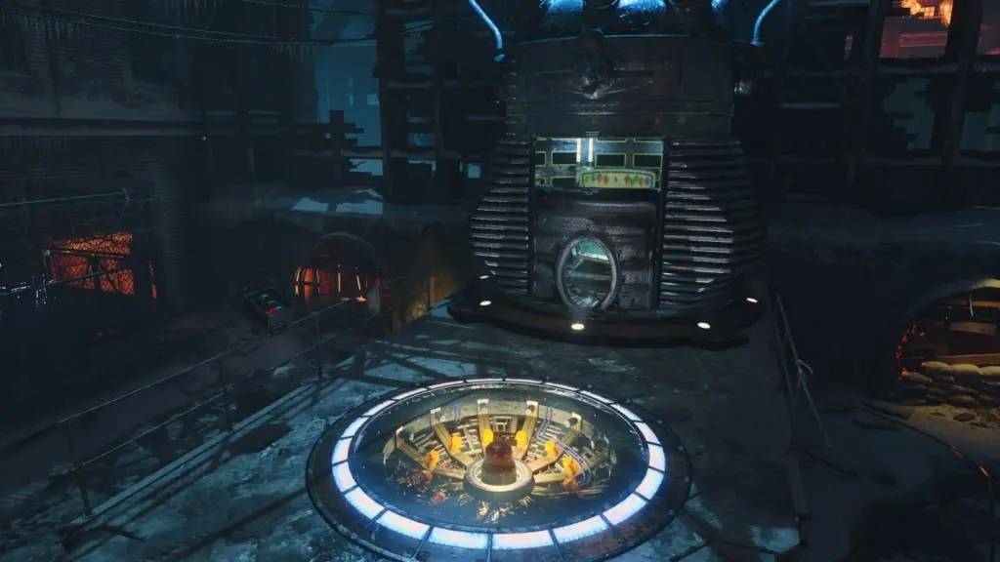

Para activarlo tendremos que activar los 3 teletransportes. Cada vez que activemos uno tendremos que ir al spawn y sincronizarlo con el del Pack-A-Punch. Esto se debe de hacer 3 veces y tendremos un periodo de tiempo limitado para realizarlo.
